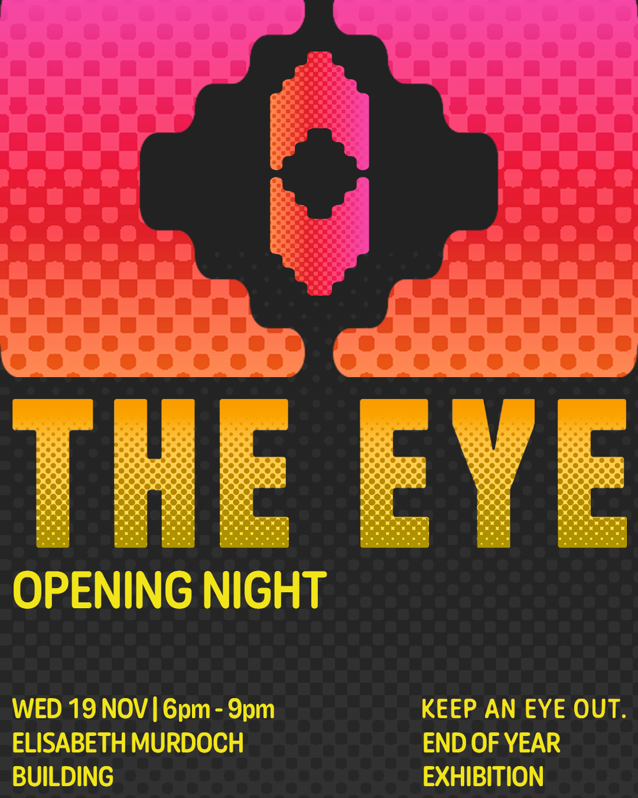

PROJECT AIM
An exhibition poster for THE EYE in Melbourne, where we designed a series of digital medial, including assets for instagram posts and stories.
THEMATIC RESEARCH
We took inspiration from similar Uni and Melbourne based exhibition, and came up with some design directions:
- simple geometric shape
- contemporary shapes, flat colors
- pop colture colors, with gradients and texture -> reflects Uni/City's culture

PROTOTYPING
Establishing the core design motif for the exhibition. We ultimately landed on simple geometric shape to create an eye


We then experimented with different colour palettes, composition, fonts, with which we chose to go with hot bright colours as we initially aimed to create a energetic, young mood.


After feedbacks, we have identified several good points and issues:
- the eye icon is very reusable in social media posts
- composition may appear flat
- color could use some more variations
- fonts feels too rigid and without personality
FINAL RESULTS
Based on feedbacks:
- more colour variation in gradients
- use a more rounded fonts
- used layering of visual elements
We created iterations of poster for both physical print and social medias: